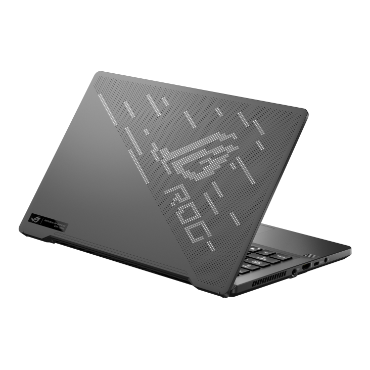
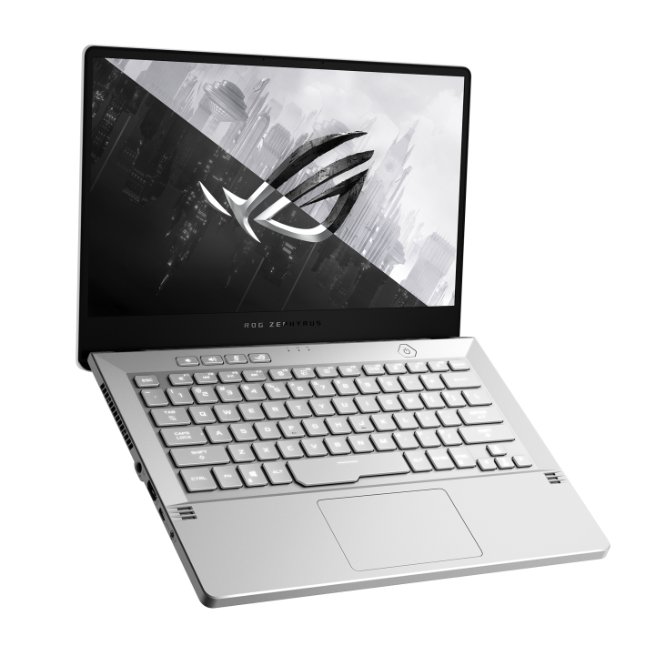

📄Описание
Asus ROG Zephyrus G14 — компактный 14‑дюймовый игровой и креативный ноутбук, сочетающий мощный Ryzen 9 8945HS и GeForce RTX 4070 (90 Вт) с 3K‑классом дисплея 120 Гц, 32 ГБ LPDDR5X и SSD 1 ТБ; при массе 1,5 кг и батарее 73 Вт⋅ч модель остаётся по‑настоящему мобильной. В предоставленной конфигурации 2024 года ориентировочная цена — $2099, сводная оценка производительности — 88/100.
💻Дисплей и корпус
14″ панель 2880×1800 с частотой 120 Гц и соотношением 16:10 даёт высокую чёткость, плавную прокрутку и комфорт для игр, монтажа и графики; тонкие рамки усиливают эффект погружения и экономят место на столе. Экран поддерживает игровые технологии адаптивной синхронизации, а заводская калибровка и широкий цветовой охват делают его универсальным для контента и работы.
⚡️Аппаратная платформа
В конфигурации 2024 года установлены AMD Ryzen 9 8945HS (8 ядер/16 потоков, буст до 5,2 ГГц) и GeForce RTX 4070 с энергопакетом 90 Вт, что обеспечивает высокий FPS в современных играх и ускорение в креативных задачах. Встроенные 32 ГБ LPDDR5X и SSD 1 ТБ (PCIe 4.0) дают запас для многозадачности и быстрых проектов без узких мест по диску.
📈Производительность
Сводная оценка 88/100 отражает быстрый отклик интерфейса, уверенную работу IDE, инструментов для фото/видео и стабильный FPS при продуманных пресетах в 1440p‑классе с DLSS. Профиль железа ориентирован на баланс: высокая производительность в нагрузке сочетается с умеренным энергопотреблением вне игр.
❄️Охлаждение и шум
Система охлаждения с несколькими теплотрубками, жидкометаллическим интерфейсом на процессоре и продуманной вентиляцией удерживает частоты при длительных рендерах и сессиях в играх. В режимах Turbo шум отчётливый, в Balanced/Silent уровень акустики снижается для работы в помещениях и учебных аудиториях.
🔋Автономность и заряд
Аккумулятор 73 Вт⋅ч обеспечивает ощутимую автономность при офисной нагрузке и разработке, сохраняя мобильность вне розетки. Поддержка питания по USB‑C Power Delivery удобна для подзарядки в дороге, тогда как комплектный адаптер раскрывает максимальную производительность видеокарты.
👨💻Для кого подходит
Оптимальный выбор для тех, кому нужна портативная игровая машина и мощная станция для монтажа, 3D‑графики начально‑среднего уровня и разработки в компактном форм‑факторе. Конфигурация с Ryzen 9 8945HS, RTX 4070 90 Вт, 32 ГБ RAM и SSD 1 ТБ обеспечивает баланс скорости, автономности и акустики, оставаясь удобной в ежедневном использовании.